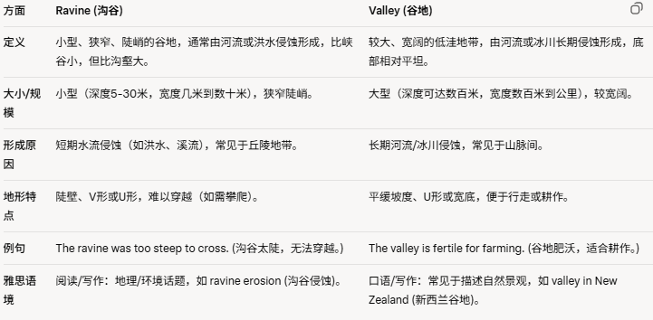
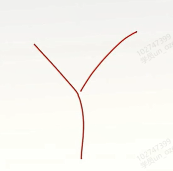
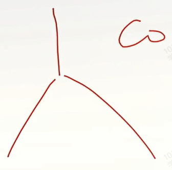

manufacture v./n.大量生产，成批制造
To manufacture high quality solar panels, you need a lot of silicon and the right technical equipment.要制造高质量的太阳能板，你需要大量的硅和合适的技术设备。
manufactured goods工业品
共 50 个词条 · 3 张附图（含音标截图）
manufacture v./n.大量生产，成批制造
To manufacture high quality solar panels, you need a lot of silicon and the right technical equipment.要制造高质量的太阳能板，你需要大量的硅和合适的技术设备。
manufactured goods工业品
constant adj.不变的;恒定的;经常的
The problem with being famous is the constant attention you get from the media.出名带来的问题在于媒体对你的持续关注。
constant interruptions 无休止的干扰 interrupt v.
version n.版本;(从不同角度的)说法，描述
He downloaded the latest version of the anti-virus software to install on his new laptop.他下载了最新版本的杀毒软件，安装在自己的新笔记本电脑上
the luxury /ˈlʌk.ʃər.i/ version 豪华型
two versions of the game 游戏的两种类型
proclaim v.宣告，声明
In a ceremony today the minister(部长;大臣，牧师，公使;外交使节) proclaimed the new building officially open.在今天的仪式上，部长宣布新大楼正式开放。
proclaim a state of emergency 宣布紧急状态
declare v.宣告;声明
prompt adj.迅速的;立刻的v.促进;导致
He was very prompt in responding to her emergency call.他迅速接通了她的紧急呼叫。
prompt treatment 立即治疗
immediate adj.立即的 同义替换
Luckily, Perkin's scientific training and nature prompted him to investigate the substance（物质;材料。（某人）所说（或所写）的最重要的部分，要点。重要性；要旨；实质；根据） further.幸运的是，Perkin的科学训练和素养促使他进一步研究这种物质。
prompt这个词还有其他意思：引起；导致；激起。The bishop's speech has prompted an angry response from both political parties.
（尤指）给（演员）提词。I forgot my line and had to be prompted.
（计算机屏幕上的）提示符（显示计算机已经准备好接受指令）
ascertain /ˌæs.əˈteɪn/ v.确定;查明 老师说：certain本来就是确定的意思，as表加强
The detectives were called to ascertain exactly how the crime was committed 侦探们被召去查明这起犯罪是如何发生的。
ascertain the facts 查明事实真相
entail v.使必要，需要
The project would entail significant effort and coordination(ate就是动词哈，/kəʊˌɔː.dɪˈneɪ.ʃən/ 协调，调节，（身体的）协调性) among team members该项目需要团队成员之间的重大努力和协调。
a situation which entails considerable risks必然会有很多风险的局面
classify v.分类;分等
When you study chemistry you usually learn about elements and how they are classified into metals and non-metals学习化学时，你通常会学习元素以及它们是如何被划分为金属和非金属的。
classify the headaches into certain types 将头痛分为几个类型
classification n.分类;类别
a reference to classifying diseases on the basis of how far they extend geographically提到根据疾病在地理上的分布对其进行分类
establish v.建立，创立
The two nations agreed to establish strong diplomatic（/ˌdɪp.ləˈmæt.ɪk/外交的，讲究方法的，委婉的（跟Wolf相对应的）） relations.两国同意建立坚实稳定的外交关系。
establish a free trade zone 设立自由贸易区
establishment n.建立，建设
represent v.代表;表现，老师说这个词在饼图里面常用到
Women now represent at least 50% of the workforce(劳动力；工人；劳动人口) in our company. 我们公司目前至少有一半员工是女性。
represent the interests of women artists 代表女性艺术家的利益
represent 20% of the annual revenue(/ˈrev.ən.juː/) 占年收入的20%
representative n.代表
Recent urban developments represent massive environmental changes.最近的城市发展代表着巨大的环境变化。
emphasis /ˈem.fə.sɪs/ n. 重点;强调
Teachers have expressed concern about the heavy emphasis on exams and testing.教师们表达了对过度强调考试和测验的担忧。
place emphasis on sth.强调某事
stress n.重点v.强调
emphasise v.强调;加强
principal /ˈprɪn.sə.pəl/ adj.主要的 n.大学校长;本金，资本
The country's principal exports are oil and carbonates(/ˈkɑː.bən.eɪt/碳酸盐), which contribute to about 40% of their GDP.该国主要出口石油和碳酸盐，二者贡献了大约40%的国内生产总值。
the principal reason 主要原因
make the mistake of focusing only on the principal consumer trends犯了只关注主要消费者动向的错误
placebo /pləˈsiː.bəʊ/ n.安慰剂，还有使人宽慰的事;安抚话的意思
To test the efficacy（/ˈef.ɪ.kə.si/功效，效力，效验） of a drug, placebos are often given to part of the control group为了测试一种药物的功效，安慰剂通常会给部分对照组服用。
the placebo effect 安慰剂效应
rage n.愤怒v.发怒;迅速蔓延，快速扩散
She had a terrible temper and was swift to fly into a rage when someone disagreed with her.她的脾气很差，当有人不同意她的观点时，她就会勃然大怒。
speechless with rage 气愤得说不出话
outrage v. 使气愤
outrageous /ˌaʊtˈreɪ.dʒəs/ adj.粗暴的，无礼的
concur /kənˈkɜːr/ v. 同意，赞同，意见一致
Some experts concur that plastic pollution in the oceans is a significant global issue.一些专家一致认为，海洋中的塑料污染是一个重大的全球性问题。
concur with each other in this view 在这个观点上取得一致意见
alley /ˈæl.i/ n.小巷，胡同
They strolled(/strəʊl/ 散步，溜达) down the narrow alley, exploring the hidden gems of the city.他们沿着狭窄的小巷漫步，探索这座城市隐藏的瑰宝。
a dark, narrow alley 一条黑暗的狭窄小巷
underpin v.巩固;构成基础;支撑
The qualities of objectivity(/ˌɒb.dʒekˈtɪv.ə.ti/客观;如实;不带个人感情) and truth-seeking underpin good journalism(/ˈdʒɜː.nə.lɪ.zəm/新闻工作;新闻业).客观和求真的品质构成了高质量新闻的基础
be underpinned by extensive research 以广泛的研究为基础
Now, finally I want to consider the psychology underpinning the traditional holiday hotel industry.最后我们来探讨一下传统度假酒店行业运营背后的心理学。
subliminal /ˌsʌbˈlɪm.ɪ.nəl/ adj.潜意识的
The advertisement contained subliminal messages that influenced viewers’purchasing decisions广告里包含了影响观众购买决策的潜意识信息。
subliminal advertising 隐性广告
subliminal influence on our senses and moods对我们的感觉和情绪有潜意识的影响
contribute /kənˈtrɪb.juːt/ v.贡献;有助于;捐助
He donated fifty dollars to the upkeep（维修费;保养费） of the cathedral （/kəˈθiː.drəl/）as he believed everyone should contribute a little.他为维修大教堂捐了50美金，因为他认为每个人都应该有些贡献。
contribute to the discussion 对讨论有贡献
contribution /ˌkɒn.trɪˈbjuː.ʃən/ n.贡献
steep adj. 陡峭的; 急剧的，大幅度的
The hiker faced a steep ascent(上升;攀登), requiring determination and physical exertion (/ɪɡˈzɜː.ʃən/尽力;努力;费力)to reach the summit.徒步旅行者面临着陡峭的上坡，需要决心和体力才能到达山顶。
a steep flight of stairs 一段很陡的楼梯
a steep descent 陡直的下降
This small volcanic island is mountainous(/ˈmaʊn.tɪ.nəs/多山的;有山的, 巨大如山的), with steep rocky slopes (斜坡)and deep, wooded ravines（/rəˈviːn/峡谷，深谷）, rising to 1487 metres at its highest peak
这个小火山岛地形多山，有陡峭的岩石斜坡和树木繁茂的深谷，最高可达1,487米。

记忆：Ravine 像“raven”（乌鸦）飞进狭窄陡谷；valley 像“valley of flowers”（花谷），宽阔肥美。
diverge /ˌdaɪˈvɜːdʒ/ v.分开;有分歧;偏离
The two friends' paths diverged as they pursued（pursue /pəˈsjuː/ /pəˈsjuːd/追求、追逐） different careers这两个朋友在追求不同的职业时走上了不同的道路。
diverge from a single ancestor 从同一原种进化而来

这个叫diverge，分开
这个叫converge，汇聚reptile n.爬行动物
Known as the world's largest reptile, salt-water crocodiles often reach six metres long.咸水鳄鱼是世界上最大的爬行动物，身长通常可达六米
the most developed of any reptile 所有爬行动物中最发达的
mammal n.哺乳动物
vertebrate n.脊椎动物
primate n.灵长类动物
Last week, we started looking at reptiles, including crocodiles and snakes 上周，我们研究了包括鳄鱼和蛇在内的爬行动物。
neuron /ˈnjʊə.rɒn/ n.神经元;神经单位
I don't know much about the science of the brain, but I do know that the brain is full of neurons that are fundamental components of our nervous systems(Nervous：来自拉丁语 nervosus（nervus = 神经、筋），指整个神经网络。)我对大脑科学了解不多，但我知道大脑中有大量神经元，它们是我们神经系统的基本组成部分。
be transferred along each neuron 沿着神经元传递
thermal adj.热的;热量的
In winter he always wore thermal underclothes to keep warm.冬天他总是穿着保暖内衣来保暖。
thermal energy 热能
thermal underwear 保暖内衣裤
oppose /əˈpəʊz/ v.反对;对抗
Our company opposes racism( /ˈreɪ.sɪ.zəm/ 种族主义;种族歧视，种族迫害)and discrimination of all forms我们公司反对一切形式的种族主义和歧视。
oppose changing the law 反对改变这项法规
fluent adj. 流畅的; 流利的 flu是流动的意思，ent是形容词
She is highly fluent in Japanese, but her spoken English language skills are less impressive她的日语非常流利，但她的英语口语能力却并不令人印象深刻。
a fluent speaker 一个讲话流利的人
fluency n.流利;流利度
clue n.线索，提示
He was frustrated(灰心的，气馁的) because he simply couldn't solve the final clue to the crossword （纵横填字游戏）puzzle(/ˈpʌz.əl/令人费解的情况;难题;谜, 测验智力的游戏（或玩具）---也可作动词：（使）感到迷惑;（使）感到为难，（使）感到困窘)他很沮丧，因为他根本无法解开填字游戏的最后一条线索。
the vital clue to the killer's identity关于杀手身份的重大线索
intern /ɪnˈtɜːn/ v. 拘留，扣押 n.实习生; 实习医生
The ambitious young intern eagerly learned from experienced professionals这位雄心勃勃的年轻实习生热切地向经验丰富的专业人士学习。
a medical intern 一位实习医生
balcony /ˈbæl.kə.ni/ n.阳台;包厢
My grandmother always uses her balcony for hanging up clothes to dry and planting flowers.我的祖母总是用她的阳台晾晒衣服和种植花草。
go out to the balcony 出去到阳台上
kitchen n.厨房
bedroom n.卧室
dining room 餐厅
living room /ˈlɪv.ɪŋ ˌruːm/(注意发音容易混淆)客厅
stem /stem/ n.干;茎v.阻止，遏制;起源于//////branch都是来自于stem，所以stem也叫起源于
Many of her emotional problems stem from her tough(/tʌf/结实的；坚固的；坚强的, 强硬的；严厉的, 困难的；棘手的, （食物）老的，不易切开的，嚼不动的) childhood experiences她的许多情感问题源于艰难的童年经历。
stem from 来源于；由于
exotic /ɪɡˈzɒt.ɪk/ adj. 异国的; 外来的
Exotic foods from a variety of countries are now available in most supermarkets现在多数超市里都能买到来自不同国家的进口食品.
brightly-coloured exotic plants 色彩鲜艳的异国植物
surge /sɜːdʒ/ v. 急剧上升 n. 激增; 翻涌
She felt a surge of relief（（不快过后的）宽慰，宽心，轻松，解脱，救济；救济品；救济金，浮雕;浮雕法） and happiness when they announced she had won the contest（/ˈkɒn.test/比赛;竞赛）.当他们宣布她赢得比赛时，她感到非常放松和快乐。
surge into their homes 涌进他们的房子
account /əˈkaʊnt/ n.账户;解释;理由v. 解释;导致
The evidence they discovered last week doesn't account for all the cases.他们上周发现的证据无法解释这些情况。
open an account 开账户
bank account 银行账户
account for 占......比例;解释
pedal /ˈped.əl/ n.踏板v. 骑车前进;踩踏板
He pressed down on the pedal hard and the car accelerated rapidly.他用力踩下踏板，汽车迅速加速。
press her foot down sharply on the brake pedal 猛踩刹车踏板
accelerator pedal 油门踏板
tuition /tʃuːˈɪʃ.ən/ n.学费;讲授，指导, （尤指一对一或小班进行的）
The students at that school get very personalised expert tuition in small groups那所学校的学生以小组形式接受非常个性化的专家指导。
receive private tuition in French 由私人教授法语
inclination n.倾向;斜坡
She hated doing housework and had no inclination to tidy up她讨厌做家务，并且不愿意进行整理。
the inclination to help them 愿意帮助他们
capture v.抓住;获得;捕获 n.捕获;战利品
The advertisement will certainly capture the attention of the TV audiences.这则广告一定会引起电视观众的注意。
capture the historian's attention 吸引历史学家的注意
export n. /ˈek.spɔːt/出口;出口商品;出口业务 v. /ɪkˈspɔːt/出口；输出 注意做动词和名词时的不同的发音
They have imposed a number of export constraints on products in recent years.近年来，他们对产品实施了一些出口限制。
export sugar and fruit 出口糖和水果
import n./v.输入; 进口
vessel /ˈves.əl/ n.船，舰;血管;容器
Container ships are huge vessels that travel thousands of miles across the ocean to transport goods from one place to another.集装箱船是一种巨大的船只，它在海洋上行驶数千英里，将货物从一个地方运到另一个地方。
a fishing vessel 一艘渔船
marvel n.令人惊异的人(或事)，奇迹
When the tallest building in the world was constructed, it was referred(/rɪˈfɜːr/（尤指简短地）提到，谈及，谈起，涉及…;与…相关) to as an architectural marvel当世界上最高的建筑建成时，被称为建筑奇迹。
a symbol of the marvels of creation 造物杰作的象征
calendar n.日历;历法;日程表
The current calendar used by most of the world dates back to the time of the Roman Empire.目前世界上大多数国家使用的历法可以追湖到罗马帝国时代。
in the last calendar year 在上一个日历年度
module n.模块;组件
His university course consisted of three different modules per year, with two main assignments per module.他每年的大学课程包括三个不同的模块，每个模块有两项主要作业。
core modules 核心模块
severe /sɪˈvɪər/ adj.严重的;严厉的;剧烈的
The roads had become blocked by the severe snowstorm道路被严重的暴风雪堵塞了。
a severe winter 严冬
a severe shortage of qualified staff 严重缺少合格员工
severity /sɪˈver.ə.ti/ n.严重性
Massive floods, long droughts, hurricanes and severe monsoons take their toll（伤亡;损失;破坏，通行费，（使）缓慢而反复地鸣响） each year, destroying millions of tons of valuable crops.大洪水、长期干旱、飓风和严重的季风每年都会发生，使数百万吨有价值的农作物遭受破坏。
engross /ɪnˈɡrəʊs/ v.使全神贯注;吸引
The captivating (/ˈkæp.tɪ.veɪ.tɪŋ/非常有趣的，迷人的，吸引人的)novel engrossed her so much that she lost track of time.这本引人入胜的小说使她全神贯注，以至于忘记了时间。
an engrossing problem引人关注的问题
More than most other hobbies, collecting can be totally engrossing, and can give a strong sense of personal fulfilment不像其他大多数爱好，收藏可以使人全情投入，并带来非常强的个人满足感。
molecule /ˈmɒl.ɪ.kjuːl/ n.分子;微粒
Water molecules are made up of a special combination(/ˌkɒm.bɪˈneɪ.ʃən/) of hydrogen and oxygen.水分子由氢元素和氧元素特殊的结合而构成
the chemical structure of this particular molecule这种特殊分子的化学结构
molecular adj.分子的
molecular structure 分子结构
Summer leaves are green because they are full of chlorophyll(/ˈklɒr.ə.fɪl/叶绿素,老师说，这种词不用会写，能认得就可以，口语写作都用不到), the molecule that captures sunlight and converts that energy into new building materials for the tree夏天的树叶是绿色的，因为它们充满叶绿素，这些分子可以获取阳光并将这种能量转化为树木新的生长材料。
rhythm /ˈrɪð.əm/节奏，韵律
She was excellent at dancing mainly because she had a great sense of rhythm她擅长跳舞，主要因为她有很强的节奏感。
the rhythm of the seasons 四季的更迭；季节的节奏
Firstly it is used as a cue（/kjuː/暗示;信号，提示）for the timing of daily and seasonal rhythms（每天和每个季节的节律） in both plants and animals, and secondly it is used to assist growth in plants.首先它被作为记录植物和动物每日和每季度节律的线索，其次它被用于辅助植物生长。
tangible /ˈtæn.dʒə.bəl/ adj.有形的;可触摸的，真实的，非想象的
The new policy creates tangible benefits for the unemployed in the community新政策为社区失业者带来了实际的好处。
tangible assets 有形资产 assets是复数，单数是asset，优点，长处；有用的人，资产;财产
intangible adj.无形的
device n.装置，设备;策略，方法
Today people are using computers less and less and doing more on tablets and other mobile（/ˈməʊ.baɪl/确认读音是ail，不是il） devices如今人们越来越少地使用电脑，而更多使用平板电脑和其他移动设备。
a water-saving device 节水装置
Two decades later Janssen developed that basic idea he saw in Southeast Asia into a portable device that uses the power from the sun to purify water. 20年后，Janssen把他在东南亚形成的基本想法运用于一种利用太阳能净化水质的便携式设备。
narrative /ˈnær.ə.tɪv/ n.叙述，叙事
The novel contains a lot more narrative than dialogue.这本小说中包含的叙事比对话多得多。
narrative fiction 叙事小说
a narrative of their journey up the Amazon关于他们沿亚马孙河而上的旅程的描述
band n.乐队;带状物，条纹
The band performed their new song, captivating the audience with their musical talent.乐队演奏了他们的新歌，以其音乐才能吸引了听众。
a rock band 摇滚乐队